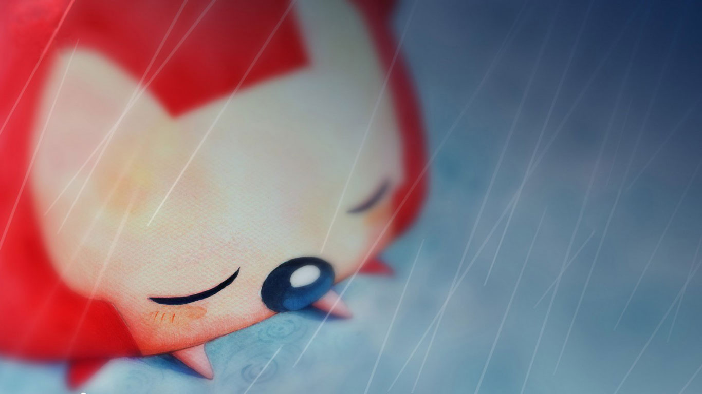

纪念与小猪猪在一起
From 2017/10/16
两只小猪的第一次合影(*^-^*)

两只小猪有着相似的经历...
都爱哭
也都爱“哈哈哈”
都总被欺负
但都成了学霸就没人敢再欺负

相隔千里的两只小猪猪
一起长大

猪猪相遇的方式也太过神奇了吧

故事的小黄瓜 从这天就开始飘着(つ´ω`)つ
心想 傻了吧唧的
居然不知道问什么
哈哈哈
你说我再不约你都要有小情绪啦
你说不如我们去看电影吧
你说你没有想过我是什么样子
可是“小确幸”告诉我有些事照镜子就明白了
你飞走了 你说谢谢招待
我犹豫了许久要不要送你 那天怂的耳朵都消失了
“再会啦”
我想 以后多大的风雨 都要护送你
第一次坐飞机 紧张得不行
落地时候都能听见自己的心跳
我想把心跳传递给你 不由分说 先给你一个大大的抱抱
那天正是10.16 我还记得
在你们校门口轻轻吻了你 然后告别
去机场的路上哭得像个傻子
吓得司机师傅一句话都不敢说
你发的朋友圈
我看了一遍又一遍
整个秋冬都无比温暖
后来的生活 忙碌且美好
你准备考研 我全力协助

白纸黑字 每次都很温暖
最右边的一串字
我记得是起床那会敲给你的(拼图拼糊了 赶紧跑)
你看到后照我说的给我发了三遍 “我是最棒的”
一下子有些感动
那段时间你承受着我难以理解的压力前行
无比感激那时的你
背景还是我最初给你拍的侧颜
一字一句像心跳

哈哈
是我最擅长的数学题
但是说实话
还是喜欢面对面给你讲
看到又傻又天真的你啊
保护欲前所未有的强烈
是你走过的路
看过的天空
也是我每分每秒的牵挂
是我看过的朝阳
接你的小道
也是你日日夜夜无边的思绪


后来经历了无数的挣扎
你我差点走丢了
好在难熬的日夜总算过去
一切都是最好的安排
若逢新雪初霁

满月当空
下面平铺着皓影
上面流转着亮银

而你带笑地向我走来
月色和雪色之间

你是第三种绝色
以前总会一个人走走停停

曾经说走就走
看过西湖的落日
后来
当我在阳台看到一朵巨大的云
第一反应是拍下来给你看
大事不妙啊
阳光是你的 零食是你的
目光所及 琐琐碎碎
都是你的
反之 同理
你说旅行是检验爱人的最好标准
旅行前夜我在期待中兵荒马乱
我们去过不是晴天的青海湖
看过晚上九点的落日
和没有色彩的丹霞
但我爱上了一起旅行
因为一路上
你就是风景
你说美食与爱皆不可负
我在慌乱中满怀期待
我们吃过令人失望的‘马嵬印象’
挤过巴掌大小的苍蝇小馆
朝着网红店一路飞奔哪怕无果而返
但你吃东西时
我会看到你眼睛里流出来的幸福感
我们一起坐过了24h卧铺
也曾经落下行李差点赶不上火车
一起看剧吃夜宵
一起逛街买零食
旅行中
是有一种家的感觉
是颠沛所盖不过的温暖

安静的你
傻笑的你
完美的你
我是个俗气至顶的人

见山是山
见海是海
见花便是花

唯独见了你

云海开始翻涌
江潮开始澎湃


昆虫的小触须挠着全世界的痒

你无需开口
我和天地万物便统统奔向你

第一个生日快乐
发呆脸红的表情特别像你
不知道你什么时候写的
学成傻子也不忘整点给我祝福
生活变得不一样了
感动呢～
我学着你认真的样子
也给你准备礼物
手稿本来不打算让你看见来着
算好了每一年的故事
讲给你听
还好数学好 哇哈哈哈
如果用一种动物形容你
那一定是一只臭猪了
我听你的话 領快递的时候憋着不看
结果在你面前感动得像一只臭猪
你像一只臭猪关注着我每个细节 一举一动
心思细腻得像一只乖巧伶俐的臭猪
怎么样
这个比喻很恰当吧 臭猪
可我总是忘记纪念日
总是惹你生气
还不知道哄 TAT
程序员有时候忙得像一条狗
你的到来
如同泼墨画上的水彩 逐渐蔓延

电话的那头是你
网络的那头是你
调不出bug时你寄的旺仔
心情down时你折的小心心
手机里有个相册叫“套路”
你别笑我哈
现在看看真的是拿衣服啊 段子越来越少 希望自己变成一只更加温柔的猪 好好保护你
想陪你一起吃吃吃
走过山山水水
拍好多好多照片
就像上边那样

吼吼
其实这不是最初想送你的礼物
原来想给你的其实是▆▆▆▆▆▆
（用小刀刮开屏幕可见）
第一次做网页奥
出了很多bug
于是我想见面的时候抢你一个hug
嘻嘻嘻
这是我的目标